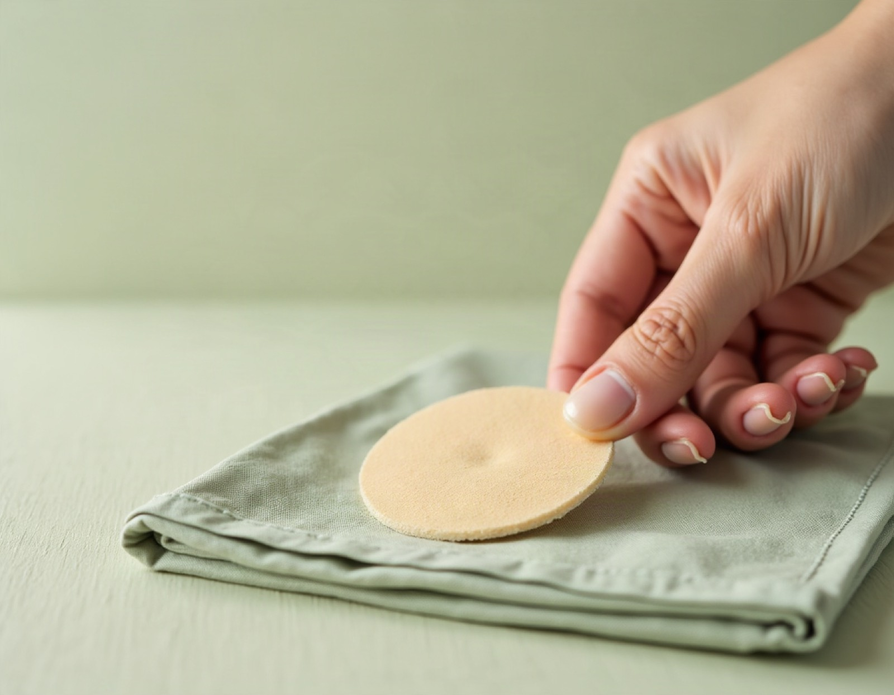

진찰은 꼼꼼하게,
한약은 원내에서 직접 달입니다
구파발경희한의원은 저칼로리 다이어트, 초음파 가이드 약침, 성장클리닉, 교통사고 후유증 진료를 대표원장 최솔이 직접 살핍니다.
- 📍 구파발역 인근
- 🕘 평일 저녁 8시까지
- 🌿 개별 맞춤 한약

진료 프로그램
구파발경희한의원에서 상담하실 수 있는 진료입니다.

저칼로리 다이어트
저칼로리 식단과 원내에서 직접 달이는 개별 맞춤 한약으로 진행합니다.
자세히 보기 →맞춤 한약 · 엔오 시리즈
보폐고 엔오, 안심환 엔오, 부종환 엔오를 진찰 후 안내합니다.
자세히 보기 →
엔오 리커버리 패치
붙여서 사용하는 외용 패치로, 사용 부위와 방법을 안내합니다.
자세히 보기 →
N약침 (엔오약침)
산화질소(NO) 관련 성분을 함유한 약침 치료입니다.
자세히 보기 →
초음파 가이드 약침
초음파 영상으로 위치를 확인하며 진행하는 약침 시술입니다.
자세히 보기 →
성장클리닉 · 초음파 성장 검사
RUF 연골 측정 방식의 검사와 나이·성별 맞춤 성장 상담을 진행합니다.
자세히 보기 →
교통사고 후유증
침·부항·물리치료·추나·약침·맞춤 한약을 상태에 맞게 조합합니다.
자세히 보기 →※ 치료 효과와 경과는 개인에 따라 다를 수 있습니다. 이 페이지는 일반적인 안내이며, 실제 치료는 진찰 후 개인별로 안내드립니다.
진료 원칙
충분히 듣고, 직접 진찰합니다
증상뿐 아니라 생활 습관과 걱정까지 듣고, 대표원장이 직접 진찰합니다.
개인별로 구성해 원내에서 달입니다
진찰 결과에 맞춰 약재를 구성하고, 한의원 안에서 직접 달여 조제합니다.
영상으로 확인하고 설명드립니다
초음파로 부위를 확인하고, 치료 방향과 기간, 관리법을 알기 쉽게 설명드립니다.

대표원장 최솔
경희대학교 한의과대학을 졸업하고 횡성군보건소 한방진료과장, 경희대학교 침구경락센터 협력 한의사, 한국한의학연구원 임상연구협력 한의사로 근무했습니다. 초음파 유도하 약침 정규과정을 수료했습니다.
- 국민건강보험공단 장기요양등급판정위원
- 제중학회 학술부회장
- 한방비만학회 · 대한스포츠한의학회 회원
자주 묻는 질문
진료시간은 어떻게 되나요?
월·화·수·금요일은 09:30~20:00(점심시간 12:30~14:00), 목요일은 14:00~20:00, 토요일은 09:30~13:00(점심시간 없음)입니다. 일요일과 공휴일은 휴진입니다. 휴진 일정이 바뀔 수 있어 방문 전 전화(02-355-4517)로 확인하시면 가장 정확합니다.
위치와 가는 방법을 알려 주세요.
서울 은평구 진관4로 47, 708동 상가 115호에 있으며 지하철 3호선 구파발역 인근입니다. 네이버지도·카카오맵에서 '구파발경희한의원'을 검색하시면 길 안내를 받으실 수 있습니다.
예약 없이 방문해도 되나요?
방문은 가능하지만 초음파 가이드 약침이나 초음파 성장 검사는 확인과 준비에 시간이 더 걸려 사전 예약을 권해 드립니다. 전화 02-355-4517 또는 온라인 예약으로 문의해 주세요.
저칼로리 다이어트는 어떻게 진행되나요?
상담과 진찰로 현재 상태를 확인한 뒤, 저칼로리 식단과 함께 개인별로 구성한 맞춤 한약을 원내에서 직접 달여 드립니다. 진행 중에는 경과를 확인하며 식단과 처방을 조정하고, 이후 유지 관리까지 상담합니다. 건강 상태에 따라 적합하지 않을 수 있어 사전 진찰이 필요합니다.
'원내에서 직접 달이는 개별 맞춤 한약'은 무슨 뜻인가요?
진찰을 마친 뒤 환자분의 체질과 상태에 맞춰 약재를 구성하고, 한의원 안에서 직접 달여 조제한다는 뜻입니다. 구성과 복용 기간은 진찰 결과에 따라 달라집니다.
진료시간 · 오시는 길
진료시간
| 월 · 화 · 수 · 금 | 09:30 – 20:00 | 점심시간 12:30 – 14:00 |
|---|---|---|
| 목 | 14:00 – 20:00 | 오후 진료 |
| 토 | 09:30 – 13:00 | 점심시간 없음 |
| 일 · 공휴일 | 휴진 |
궁금한 점은 편하게 문의해 주세요
진찰 후 상태에 맞는 방법을 설명드립니다.